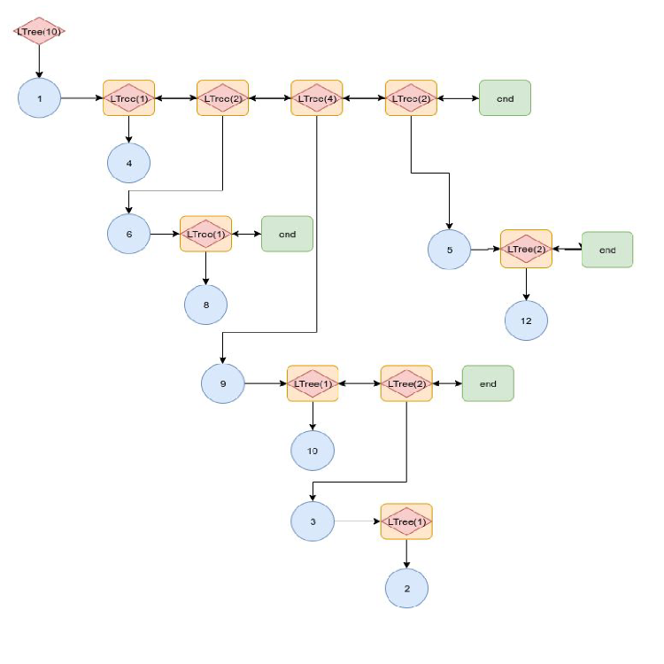
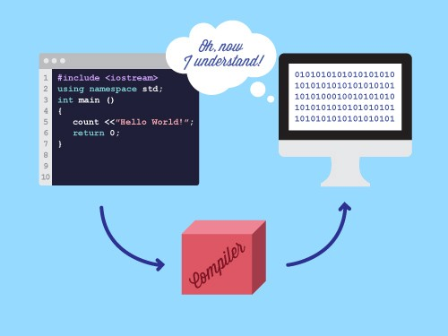

Portfolio Projects
Click on any project card to view more detailed information.
MCP with OAuth2 & Monitoring
Built Model Context Protocol (MCP) integrations with OAuth2 and user-level monitoring for internal applications.
Emergency Certificate Rotation (CPS)
Automated certificate rotation pipeline for Akamai Certificate Provisioning System to handle CA vulnerability markups globally.

Software Delivery Automation
Full-stack application for end-to-end deployment, testing, and monitoring, reducing weekly manual toil by 95%.

Low Latency Log Analysis & Kubernetes
High-throughput data pipeline migrated to a self-managed Kubernetes Spark Cluster on Linode to analyze millions of rows.

Python Automation Library
Concurrent Python automation library with abstract statistical models, reducing manual monitoring effort by 75%.
Trie-Based Inverted Index Engine
Custom C++ search engine using Trie data structures optimizing for memory locality and fast wildcard queries.

LTree: Hybrid Fast Data Structure
Novel C++ hybrid data structure bridging Arrays and Linked Lists with O(log n) access time.
Hierarchical RNN Image Captioning
CDSAML Internship project using a hierarchical recurrent neural network to generate descriptive paragraphs for images.

Fast Merge Sort (ARootSort)
Highly optimized adaptive merge sort based on array sortedness and subarray reversing.

3D Structure from 2D Images
Constructing 3D structures from multiple 2D images using deep learning and image processing.

Compiler Design
Custom compiler for a C-type language featuring control structures and automatic code optimization.

Master-Slave DB Orchestrator
Highly available and fault-tolerant Database as a Service using master-slave replication architecture.
Project Euler
Solving complex mathematical problems with code using advanced algorithms and optimization techniques.